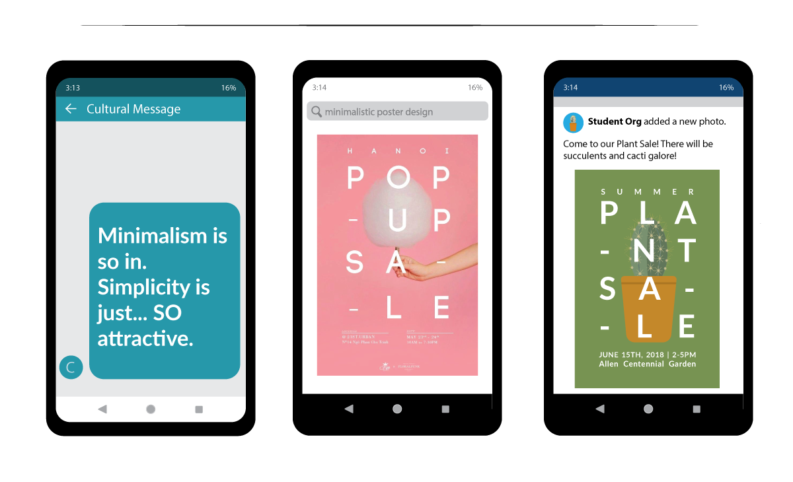
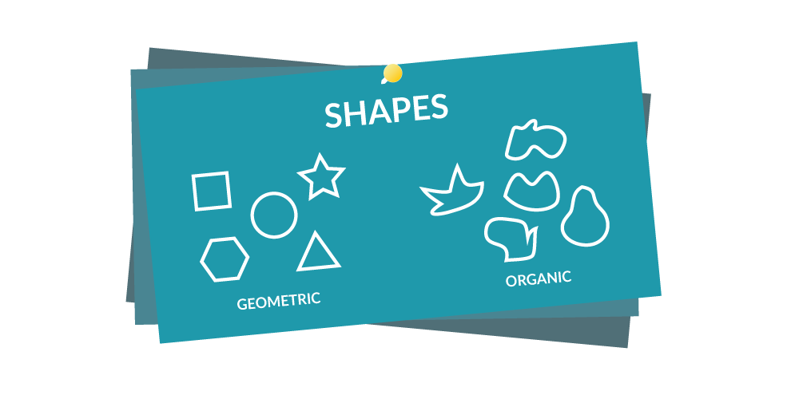
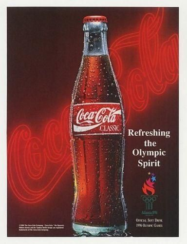
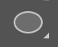
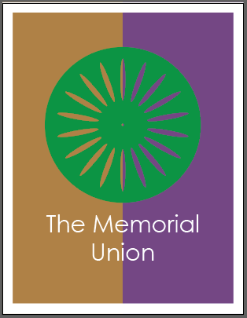
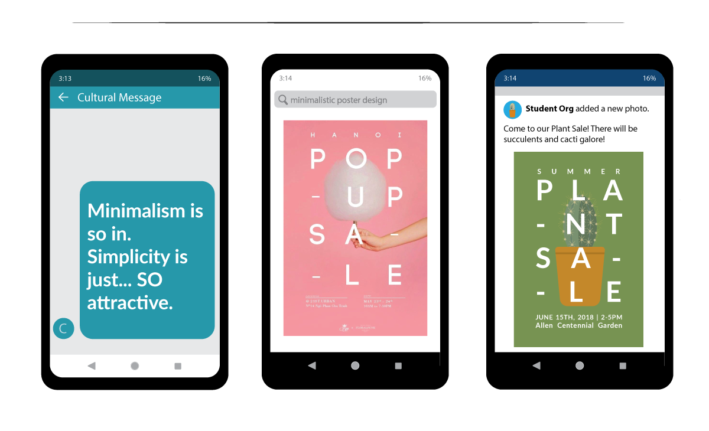
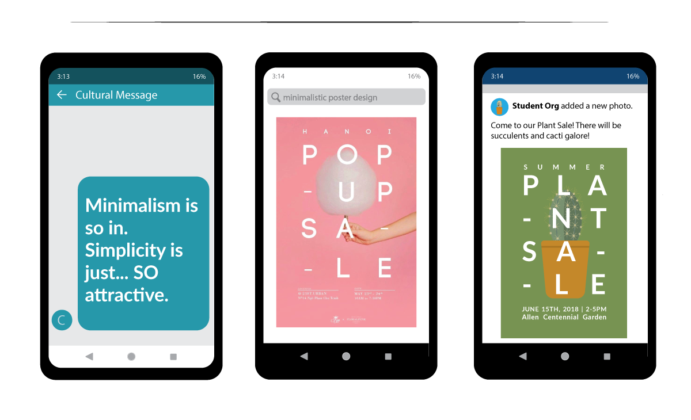

Graphic Design: A Cultural Reference to Our Society.
The most powerful graphics are those that speak most to our experiences, the collective narratives of our communities, and the opposition of what society has deemed the norm. But to appreciate Graphic Design pieces is to appreciate the cultural reference it points towards. Colors, typography, and composition don’t mean a thing without a cultural association. In this STS Graphic Design series, learn the deeper meaning of Graphic Design and its greater purpose of relaying complex messages in visual styles specific to its particular era.
In this course, learn the power of Color Theory and its effect on Graphic Design pieces over the decades, understand the emotional impact colors can generate, and grasp the general rules of color to follow in order to best align with the most current Graphic Design style: minimalism. At the end of the lesson, complete the “Terrace Chair” project in Adobe Illustrator using the concepts you learned in class.
Graphic Design & Culture
What is Graphic Design?
In its simplest definition, Graphic Design is the combination of graphics, color, and fonts. BUT none of these are powerful until they promote a message relevant to a society, whether that be a group of people, an organization, or the entire world.
EXAMPLE 1: THE STOP SIGN
How do we identify a Stop Sign? How do we know to stop at one?
Through exposure, particular graphics become meaningful. A Stop Sign is found all throughout a city, and society has defined the combination of its different components to mean the following: Stop otherwise there is danger
But what if we were to come across a "Stop Sign" with an orange Curlz MT font instead of the white sans-serif font? Unless it eventually became the norm, we probably wouldn't take the sign so seriously, mostly because we were raised to expect certain features from Stop Signs.
EXAMPLE 2: BATMAN
In the United States, Batman is a well known figure for many people. Whether you grew up with the original comic books, played with Batman action figures, or have merely heard of the films, Batman surely can't be missed or mistaken. Below, you will find three representations of Batman. Notice how they are all different in their own way, yet through consistant colors and shapes, the Batman brand can be recalled. But are colors, shapes, and (sometimes) text really the only way to identify Batman? NO. Rather, the way we can identify such colors, shapes, and text to be associated with Batman is through constant exposure of the character and brand.
Exposure to Culture Grants Us Access To Create.
Even though art does not come naturally to everyone, everyone is still capable of understanding popular cultural references and replicating the techniques used to send a message. Our constant surrounding of graphic design work give us examples of what a project nowadays should look like and contain.

This definition of culture deals with the production of messages and understanding through exposure of particular everyday visuals and styles. This should not, however, be an excuse to steal and profit off cultural realities by marginalized communities, or celebrate stereotypes. Do appreciate, don’t appropriate.
FUN-damentals: Lines, Shapes, and Forms
Watch this Awesome Fundamentals of Design Video
Line
Lines are the connection of any two points which can be straight, jagged, or curvy. In Graphic Design, lines can organize content, make illustrations, or add detail to any work.
Shape
A shape is an enclosed outline of an object composed of intersecting ends of lines. Shapes can be either geometric or organic. In Graphic Design, shapes can help organize content, make illustrations, or add detail to any work.

Geometric/Regular Shape
Geometric shapes, are mathematically calculated to have perfect measurement ratios throughout its enclosure (ex. square, circle, triangle, rectangle, octagon, etc.)
Geometric shapes can be used to create simplistic and visually-pleasing versions of any person, place, or thing.
Organic Shape
Organic shapes are non-perfect and free-form.
Organic shapes can always be broken down into several overlapping geometric shapes.
Form
Forms are the three-dimensional version of any given shape. Forms are created when light, shadow, and perception are added to create a notion of depth and a touch of realism.
Texture
Texture is the feel, appearance or consistancy of a surface. Texture can be implied through Graphic Design art with lines, shapes, and/or forms. Texture adds depth and tactility to images that would otherwise seem flat.
Balance
Balance is the equal distribution of visual weight on a physical or digital canvas. “Visual weight” consists of all the objects (lines, shapes, text) within a canvas space and their inherited properties (color, size, number). A project’s balance can also be affected by the negative space created in the presence of objects, such as, but not limited to, margins.
Negative/Blank/White Space
Negative space is the space that surrounds an object in a canvas which sometimes creates the illusion of other shapes.
More Obvious Examples
Below is a poster created by SANCCOB in an effort to save African penquins.
The graphic below was created by Israeli artist Noma Bar. Check out more of her work here!
This design was created by Christopher DeLorenzo. See similar works by other artists here!
Less Obvious, Yet Most Common Examples:
Margins found in books, magazines, and website layouts are some of the most common examples of negative space that we can interact with daily. While it seems simple in comparison to the examples above, it's a reminder that pleasant-looking layouts and designs are not difficult to construct once we pay attention to detail.
Rule of Thirds
Sometimes negative space is not equally distributed on a canvas, which if done correctly, can help give visual balance to a project. The Rule of Thirds establishes a pretend grid on a canvas made up of two equidistant horizontal lines and two equidistant vertical lines. If a subject is placed on one of the four intersections, the canvas can become balanced and more visually pleasing.
Minimalism (Very popular nowadays)
The limited use of colors and shapes to create a distinct and clean graphic.
1950s Coca Cola Ad Example:
1950s: Ad depicts people (particularly middle class white mother and her children), the product itself, typography (in a more curvy font), and many colors (more than 4). There is a sense of realism in the ad, and the target audience is obvious: white middle class families.
1990s Coca Cola Ad Example:

1990s: Ad depicts no people, just the product, as well as less type and color than the 1950s ad. There is still a sense of realism in the ad, but the target audience is more general with its lack of people in the ad.
2010s Coca Cola Ad Example:
2010s: Ad depicts no people, little type, and a new product. Colors are limited to two (red and white) The graphic is minimal compared to the 50s and 90s ad. Notice how the ad’s simplicity creates a more inclusive feel of who the product targets. It should also be mentioned that Coca-Cola’s iconic reputation and popularity allows it so that this minimalism is effective.
Raster Vs. Vector Images
Raster Images:
Raster images have a set number of pixels, and if expanded beyond their limits, these images become blurry or “pixelated”. The most popular example of raster images are photographs taken by cameras and the most common image formats include jpg, gif, png, tif, bmp, psd, eps and pdfs originating from raster programs.
Common raster programs are photo editing / paint programs such as Photoshop & Paint Shop, GIMP. Depending on the complexity of the image, conversion to a vector image is doable, but may be time consuming.
Why Is My Picture Blurry?!
Have you ever downloaded a small image file and increased its size only to realize it’s now blurry and unattractive? That’s because it had a low pixel count.
The higher the pixels, the larger the file. The lower the pixels, the smaller the file.
When downloading images from the web, aim to download the largest file possible to avoid any disappointment. It's always preferable to scale down than to scale up with raster images.
Vector Images:
Vector images are composed of paths through mathematical equations. This means they can be scaled up (or down) with no distortion because the mathematical calculations shift accordingly to maintain the image’s original look. This resolution-independence results in the ability to be printed at any size and resolution. Unlike raster images, vector graphic dimensions do not reflect their file size, meaning a very large vector image meant to be printed for a billboard can be saved as a very small file size in comparison.
Vector programs such as Adobe Illustrator are best for creating logos, drawings and illustrations, and for images that will be applied to physical products (ex. Mugs, stickers, etc.) The number of colors can easily be increase or reduced to adjust printing budgets. Common vector graphic file formats include ai, cdr, svg, and eps & pdfs originating from vector programs. Vector images can become raster images once saved as a jpeg or png.
Intro to Color Theory
Watch this Awesome Color Theory Video
The Color Wheel
Primary Colors:
Red, Yellow, Blue (all other colors are derived from these 3 hues)
Secondary Colors:
Orange, Green, Purple (formed from primary colors)
Tertiary Colors
Yellow-orange, Red-orange, Red-purple, Blue-green, Yellow-green, Blue-purple (formed from mixing primary colors and secondary colors
Warm vs. Cool Colors
Red through yellow hues on the Color Wheel are typically considered warm colors as they tend to remind us of the sun or fire which evoke warmth
Green through violet hues on the Color Wheel are typically considered cool colors as they tend to remind us of water or grass which evoke a cool feeling
Black and White (Not Colors, But Great Neutral Choices)
While black and white are technically NOT colors, their pure form offers a neutrality that is great for balancing any Graphic Design project. Black and white make it possible for more colors beyond those on the Color Wheel to exist!
Black = Shade
Shade: dark values that are made by mixing a color with black - for examples, maroon is a shade of red, and navy is a shade of blue. Black absorbs all colors.
White = Tint
Tint: light values that are made by mixing a color with white - for example, pink is a tint of red, and light blue is a tint of blue. White reflects all colors.
Tone: adding grey to colors. This allows there to be even MORE hues (colors) available when designing.
Color Harmony (Palettes)- "Starting Point Formulas"
All of the examples below have the base color as Red.
Monochromatic
This type of color palette is created using different values and saturations from one base color.
Analogous
This type of color palette is created using colors that are on either side of the base color on the Color Wheel.
Complementary
This type of color palette is created using the color straight across from the base color on the Color Wheel.
Split Complementary
This type of color palette is created using colors that are on either side of the base color’s complement.
Triadic
This type of color palette is created using three evenly spaced colors from the Color Wheel.
Tetradric
This type of color palette is created using two complementary color pairs from the Color Wheel.
"But there are so many colors to choose from!"
Not sure where to begin with choosing colors? Go to this site to get started: Great Color Harmony
Here you can get some great inspiration! The titles the site gives their palettes are also indicative of what type of project they can be used for.
Adjusting Your Color Harmony Formulas
Colors have been studied to evoke certain emotions and reactions when in their presence. While the exact observations for specific colors may not hold truth for every individual’s experience with them, it is important to understand that the cultural input placed onto colors still leads to certain emotional manipulations nonetheless.
Associations to both love and war but also importance - think red carpet
Triggers stimulation, appetite, hunger
Attracts attention.
Example: Fast Food Logos/Interior Design
Orange
playful, energetic, cheap
Excitement about something without severity
Creates haste and please on impulse - signify health and suggesting vitality and vibrance
Example: Clearance items marked in orange
Yellow
happy, friendly
Happiness - activates the anxiety center of the brain - stimulate and vitalize (think signs and taxis)
Darker shades such as gold adds more weight and gives it a sense of antiquity
Example: Fast Food Logos/ Interior Design Cont’d: Yellow triggers the feelings of happiness and friendliness, making fast food logos and interior design attractive and inviting
Green
natural, stable, prosperous
Environment, outdoors - nature and organic qualities
Most balanced color, offers sense of stability
Example: Bank logos (idea that your green (money) is safe here!)
Blue
refreshing, free
Darker blues - somber, heightened security, nobility and professionalism
Often said to make one stay longer in its presence
Example: Facebook, Culvers
Purple
luxurious, mysterious, romantic
Luxury - elegance, high-end appeal
Lighter shades of purple - spring and romance (lavender)
Darker shades of purple - mystery, creativity, sensual romantic elements
Pink
romance, young, innocent
Connotation with childhood and sugary treats give something a sweet and innocent appeal - combined with red, light purple to show romance
Brown
earthy, sturdy, rustic
Associated with earth and trees - outdoorsy feel, especially paired with green, sturdy and reliable feeling
Old fashioned - wood feeling
Gray
neutral, formal, gloomy
A balance between white and black so it doesn’t convey a particular sensation of the two
If black is too powerful for design, use dark gray
If white is too bland, use light gray.
Beige
accentuates surrounding colors
It takes on the characteristics of the colors around it despite being dull on it’s own
White (Tint)
clean, virtuous, healthy, classic
Sterile, spotless feeling - associated with hospitals and medical staff give white a very healthy feeling
Minimalistic
Black (Shade)
powerful, sophisticated, authority, bold
Promotes message of business and authority
Classic option for text on light colors
RGB vs. CMYK
RGB: Red, Green, Blue
Used for screens and carry a hex value for easy duplication
Hex is a 6-digit, 24 bit, hexadecimal number that represents Red, Green, and Blue.
Made up of digits 0-9 and letters a-f making 16 million possible colors
Example: in the Hex #123456, 12 is Red, 34 is Green, and 56 is Blue
CMYK: Cyan, Magenta, Yellow, Black:
Used for printing; more limited in colors
Graphic Design Tip:
Typically choose 1-4 colors for a Graphic Design project when focusing on a minimalistic style; this ensures that your colors will be balanced and gives room to play around with shades and tints of those colors.
Color Dominance → be purposeful with every color you choose and how much dominance you give to each. The greater the vibrance or space a color takes up within a canvas, the greater dominance it holds.
Adobe Illustrator Project: Memorial Union Poster
Introduction to Project
Integrating what you have learned in this course about Color Theory, you will use the designated tools in Illustrator to create four versions of a Memorial Union Poster with a terrace chair graphic. Each version of the poster will have a different color palette to showcase how a variety of color combinations can be used to make a pleasant minimalistic poster design. Keep in mind that the only factor changing between designs is color; not layout, composition nor typography.
Tools Used
Selection Tool
Ellipse Tool
Changing Stroke/Fill
Color Palette (introducing hex #)
Rotating Tool
Illustrator Refresher: The Interface (where to find everything)
Creating The Memorial Union Poster
Open Adobe Illustrator and create a new project
Go to File > New
Name the project Memorial Union Poster
Adjust the Width to 8.5 Inches
Adjust the Height to 11 Inches
Change the number of Artboards to 4
Click on the Advanced Options to expand the drop-down menu
Change the Color Mode to CMYK Color
Change the Raster Effects to High (300 ppi)
Keep the Preview Mode to Default
Click Create
Before we begin, we will change some general preferences in Adobe Illustrator to make our designing process a little easier,
Make sure your Control Panel is checked by going to the Window menu and checking the Control Panel option
Click on Preferences and in the General category, check the Scale Strokes & Effects option. This will make sure all shapes keep their stroke sizes and effects proportionate to their original size when scaled up or down.
Under the View menu, check Smart Guides and Snap to Point. These provide references for us to better layout our lines and shapes on our canvas.
Creating the Terrace Chair Graphic:
While on the Selection Tool (V) click on one of the four canvases and then hit Ctrl + 0 or Cmd + 0 on your keyboard to zoom in completely on that selected canvas.
Selection Tool (V)
The Selection Tool allows you to select objects on your canvas and move them.
From the Tools Panel on the left side of your work station, hold down the Rectangle Tool (M) to reveal more tools, and select the Ellipse Tool (L)
Ellipse Tool (L)

The Ellipse Tool allows you to create circles and ovals on your canvas. Click the Shift Key while dragging an ellipse to create a perfect circle.
While on the Ellipse Tool (L), click and drag on your canvas while holding down the Shift Key to create a perfect circle
From the Control Panel, resize this circle to 5.5in by 5.5in near the top-right of the screen in the W and H section
Using the Ellipse Tool, create another perfect circle:
Resize this circle to 0.1in by 0.1in
Using the Selection Tool (V), move the circle so that it is in the center of the larger circle. Your pink guidelines will indicate the center!
Using the Ellipse Tool (L), create an oval
Resize it to be 0.2in by 1.5in
Using the Selection Tool (V), move this oval so that it is within the larger circle, directly above the smaller circle, slightly higher than the midpoint between the smaller circle and edge of the large circle. Your pink guidelines will once again, indicate the proper alignment:
Making sure your oval is still selected, select the Rotate Tool (R)
Rotate Tool (R)
The Rotate Tool allows you to rotate objects on your canvas to a specific degree. To change the angle at which the object rotates, first hold down the Alt/Option Key and click wherever you would like the new rotate reference to be. After you click, a new dialogue box will ask you to input an angle.
Hold down the Alt/Option Key and click on the center of the small circle. This is the new rotate reference for our oval shape.
A box will appear. Change the Angle to 20 and click Copy.
We now made a copy of the oval that is 20 degrees away from the reference point on the orginal oval!
Click Ctrl + D or Cmd + D to duplicate the last action you did (which was copying the oval 20 degrees from the original). Keep duplicating until you reach the original oval:
Using the Selection Tool (V), make a selection box over all the shapes you've created to highlight them.
Go to Object > Compound Path > Make to join the selected shapes into essentially one large circle with with see-through oval “holes”...or in other words, the Terrace Chair! While it may seem that nothing has changed, the difference will become more obvious once we brighten up our chair with a fill color.
Make a Compound Path
When you make a Compound Path in Illustrator, you ultimately combine overlapping shapes into one. First use the Selection Tool (V) to highlight the overlapping shapes you wish to combine, and then go to Object > Compound Path > Make. You will now have one solid shape with "holes" wherever your overlapping shapes were inititally.
Change the color of the Terrace Chair to a Yellow Fill:
Using the Selection Tool (V) select the Terrace Chair shape
From the Tools Panel, double-click on the white Fill Color to open the Color Picker
Change the Hex # to FFDE17 (highlighted text below) to get a specific Yellow
While still selected on the Terrace Chair, change the Stroke Color to none
From the Tools Panel, click on the black Stroke Color to bring it forward.
Click on the white box with red diagonal line right under the stroke box. This will change your shape’s stroke to none.
Using the Selection Tool (V) move your Yellow Terrace Chair graphic to the center of your canvas, and then slightly higher than the middle.
Creating the Poster Background
From the Tools Panel, hold down on the Ellipse Tool (L) and select the Rectangle Tool (M) from the drop-down list of tools
Rectangle Tool (M)
The Rectangle Tool allows you to create rectangle or square shapes on your canvas. Hold down the Shift Key while dragging a rectangle to create a perfect square shape.
Make a rectangle that is half the width of your canvas. The rectangle should automatically have a yellow fill and no stroke that we will soon change.
From the right side of your work area, click on the Color Guide Icon (a fourth of a circle shape with gradient) to extend it.
The Color Guide
The Color Guide is a tool aimed to help you reference different color palettes specific to your selected color. These color palettes offer guidance to which colors you should combine with your selected color so that your project looks the most consistant and pleasing to the eye.If for any reason the Color Guide Panel is unavailable from the Panels Dock, from the Menu, go to Window > Color Guide to open it.
Make sure that the color selected in the Color Guide is the Yellow fill we used for our Terrace Chair. In the case that it isn’t, click on the Yellow Fill from the Tools Panel and then click the Yellow Fill on the Color Guide to activate it.
From the drop-down menu, you have the option to select various color palettes. Select Pentagram on the very bottom of the list.
From the Pentegram color palette, you should have the following shades and tints available:
Using the Selection Tool (V), select the rectangle and click on the orange color indicated by the black box below to change its fill color:
Notice how the orange rectangle is on top of your Terrace Chair. Move the rectangle to the back of the canvas by either Right-clicking > Arrange > Send To Back or hitting the keyboard shortcut Shift + Ctrl + [ or Shift + Cmd + [
Using the Selection Tool (V), hold down the Alt/Option Key, and click and drag on the orange rectangle so that the new rectangle covers the white space of the canvas. You just created a copy!
From the Pentegram Palette in the Color Guide tab, select the following orange indicated by the black outline to change its fill color:
Creating the White Border
Using the Rectangle Tool (M), make a rectangle that is the size of the canvas (8.5 in by 11 in).
Change the rectangle Fill to none and Stroke to white.
Change the Stroke to 25 pt
From the right side of your work area on the Panels Dock, click on the two triangles furthest to the right to expand the panels.
From the expanded panels, double-click on Appearance to expand it if it isn’t already. In case Appearance is not an option, from the Menu, go to Window > Appearance.
While still selected on your white border, from the Appearance tab, click on Stroke. A new window will appear. Change the Align Stroke selection to the middle option. Notice how your stroke alignment changed to all be within your canvas!
Adding Type:
From the Tools Panel, select the Type Tool (T).
Type Tool (T)
The Type Tool (T) allows you to add in numbers, letters, words, sentences, and phrases to your project.
Click and drag to create a large text box underneath the Terrace Chair.
In the text box, write "The Memorial Union" and then highlight your text.
Navigate to the top of your work area in the Controls Panel and find the Character and Paragraph section.
Change the Font to Century Gothic
Change the Font Size to 60 pt
Change the paragraph alignment to center
Change the Fill to white and Stroke to none
Using the Selection Tool (V), move the Terrace Chair and Text accordingly so that together they are at the center of the flyer.
Making Copies of the Finished Posters
Using the Selection Tool (V), make a selection box around the entire poster, or hit Ctrl + A to select all.
Zoom out of your canvas by hitting Ctrl - or holding down the Alt/Option Key while strolling down on your mouse.
While holding down the Alt/Option Key, click and drag your selection to the next canvas. Align the selection with the canvas so that it is a perfect copy of your first canvas.
Make two more copies to fill the other two canvases.
Creating Posters Using Different Color Palettes:
Poster 2: Complimentary Colors
Using the Selection Tool (V), select the Terrace Chair.
From the Tools Panel, double click on the Fill Color to open the Color Picker.
Once the Color Picker is opened, change the Hex # to F15A29 to get a shade of orange and click OK.
From the right side of your work area in the Panels Dock, click on the Color Panel Icon to expand it.
Color Panel
The Color Panel, just as the Color Picker, gives you greater variety in color choices for your fills and strokes. It is found in the Panels Dock
Click on the Color Guide tab and, making sure you are still selected on the Terrace Chair, click on the top-left color square. This will update the palette so that it specific to the selected color.
Click on the drop-down menu, and select the Complementary Color Palette
Using the Selection Tool (V) select the left background rectangle from your poster
From the Color Guide, select the following blue shade
Select the right background rectangle from your poster
From the Color Guide, select the following blue shade
Poster 3: Triad Colors
Using the Selection Tool (V), select the Terrace Chair.
From the Tools Panel, double click on the Fill Color to open the Color Picker.
Once the Color Picker is opened, change the Hex # to 009444 to get a shade of orange and click OK.
Click on the Color Guide tab and, making sure you are still selected on the Terrace Chair, click on the top-left color square. This will update the palette so that it specific to the selected color.
Click on the drop-down menu, and select the Triad Color Palette
Using the Selection Tool (V) select the left background rectangle from your poster
From the Color Guide, select the following orange shade
Select the right background rectangle from your poster
From the Color Guide, select the following purple shade

Poster 4: Monochromatic Colors
Using the Selection Tool (V), select the Terrace Chair.
From the Tools Panel, double click on the Fill Color to open the Color Picker.
Once the Color Picker is opened, change the Hex # to A12C22 to get a shade of red and click OK.
Click on the Color Guide tab and, making sure you are still selected on the Terrace Chair, click on the top-left color square. This will update the palette so that it specific to the selected color.
Click on the drop-down menu, and select the Monochromatic Color Palette
Using the Selection Tool (V) select the left background rectangle from your poster
From the Color Guide, select the following red shade
Select the right background rectangle from your poster
From the Color Guide, select the following purple shade
Your posters should look like this once you are all done! Time the time to notice how each poster has its own personality due to their color palettes. Some might feel more compatible with the Memorial Union vibe. Why do you think that is?


 
